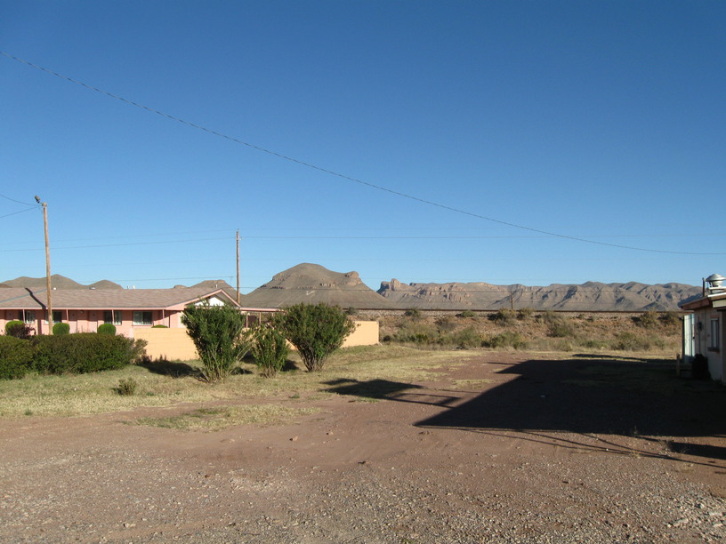
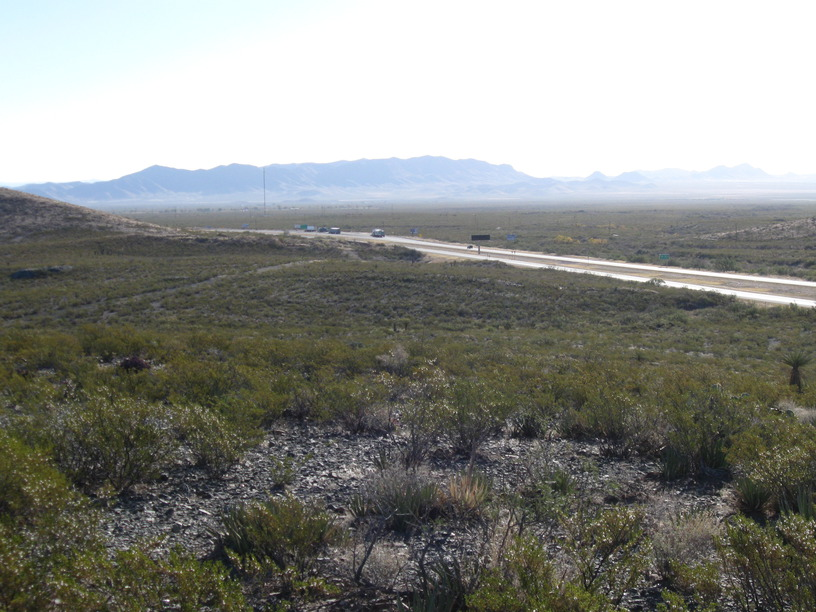
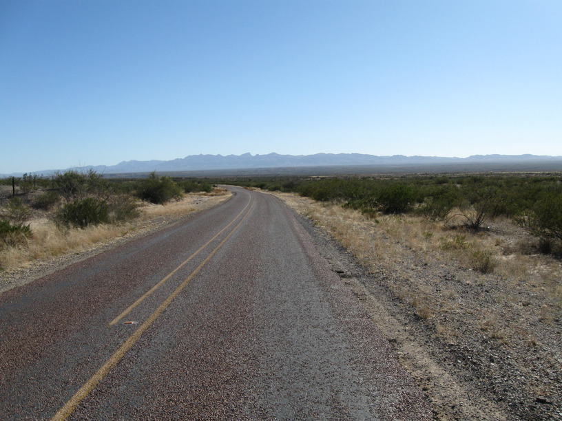
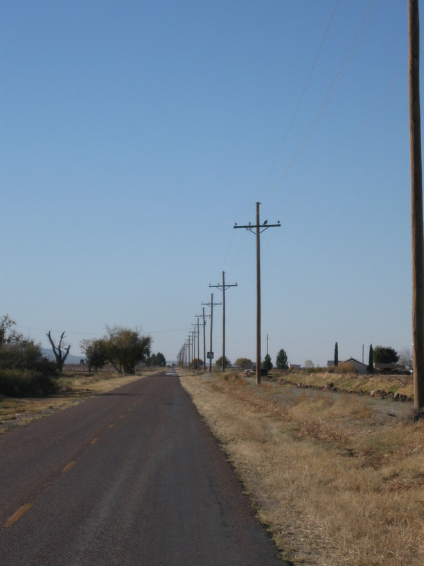
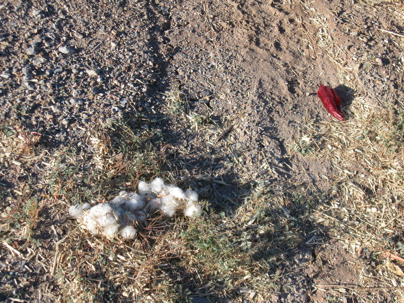
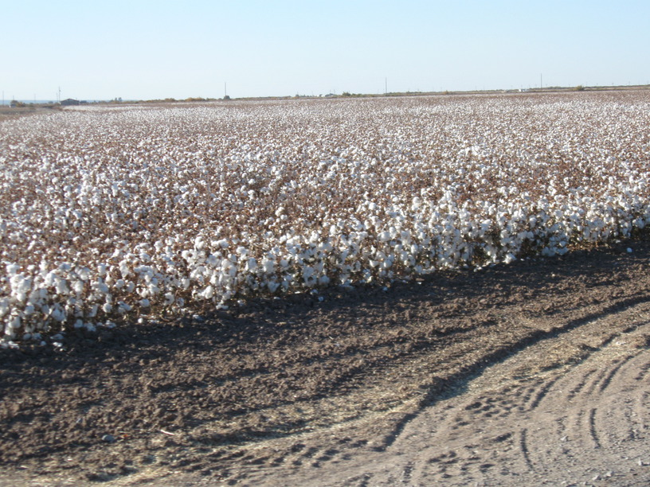

16 Nov 2008, Fort Hancock, TX
Cycling today was pretty mundane—lots of flat terrain. I started designing random things in my head—a self-propelled bike trailer & motorized weird art things like the piece at the BMA that draws on the wall.
My hosts tonight are Street & Melloy Rogers. Street is Alice's brother—Alice hosted me in Montell. They are very friendly & Street has a great sense of humor. He's an airline pilot (for US Air, I believe) & had lots of great stories of the practical jokes he has pulled on his flight crew.
I may try to ride 90 miles tomorrow, so I've got to get my rest.





